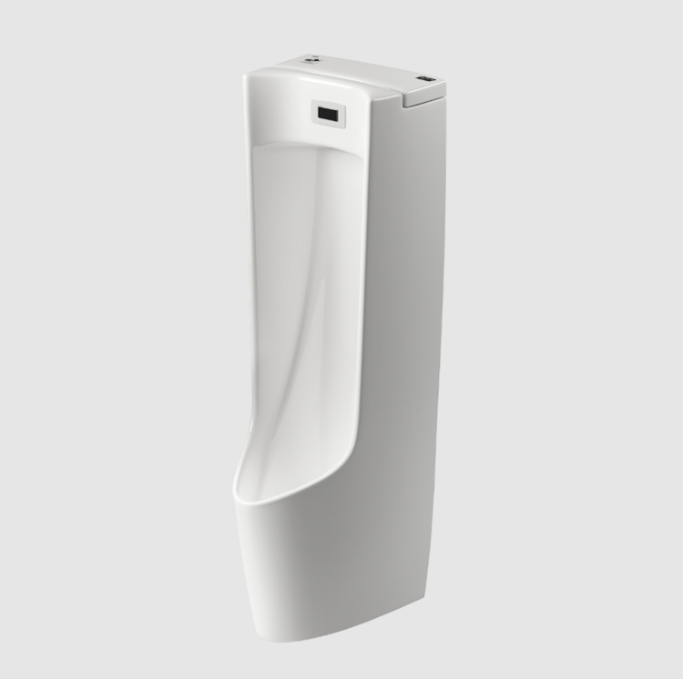
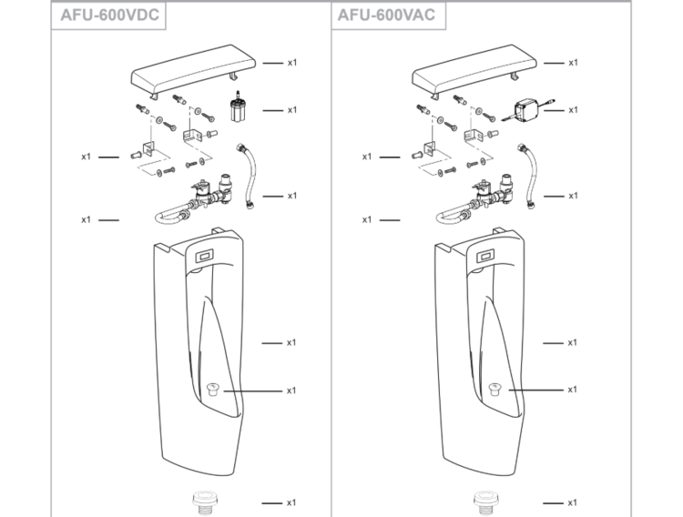

Bồn tiểu nam INAX AFU-600V (AC) là dòng bệ tiểu cảm ứng cao cấp, đại diện cho sự kết hợp hoàn mỹ giữa công nghệ hiện đại và thiết kế tinh tế từ Nhật Bản. Với khả năng vận hành thông minh và vẻ ngoài sang trọng, sản phẩm này hiện đang là lựa chọn hàng đầu cho các không gian kiến trúc đẳng cấp như sân bay quốc tế, nhà hàng hạng sang và các khách sạn 5 sao.Thiết kế thân dài đẹp mắt, hiện đạiBệ tiểu nam cảm ứng AFU-600V (AC) sở hữu kiểu dáng thân dài đẹp mắt với kích thước 370 x 420 x 1140 mm. Thiết kế đặt sàn chắc chắn kết hợp với vành bồn cao giúp hạn chế tối đa tình trạng bắn nước thải ra ngoài, đảm bảo khu vực vệ sinh luôn khô ráo và sạch sẽ. Đường nét của sản phẩm được trau chuốt tỉ mỉ, tạo nên một tổng thể hài hòa, phù hợp với nhiều phong cách nội thất từ tối giản đến hiện đạiCông nghệ men sứ Aqua Ceramic độc quyền INAXĐiểm nhấn công nghệ đáng chú ý nhất trên AFU-600VAC chính là lớp men Aqua Ceramic độc quyền của thương hiệu thiết bị vệ sinh cao cấp INAX. Công nghệ này có những đặc điểm nổi bật sau:Chống bám bẩn tối ưu: Công nghệ này tạo ra một bề mặt siêu ưa nước, cho phép nước len lỏi vào dưới các vết bẩn và đẩy chúng tách rời khỏi bề mặt sứ.Trắng sáng suốt 100 năm: Aqua Ceramic giúp ngăn chặn việc hình thành các vết ố vàng do cặn khoáng, giữ cho bồn tiểu luôn giữ được vẻ trắng bóng nguyên thủy mà không cần sử dụng quá nhiều hóa chất tẩy rửa độc hại.Dễ dàng vệ sinh: Bề mặt nhẵn mịn giúp người dùng tiết kiệm thời gian và công sức trong việc bảo trì sản phẩm hàng ngày.Hệ thống cảm ứng thông minh và tiết kiệm nướcBồn tiểu AFU-600VAC sử dụng nguồn điện trực tiếp 220V (50-60Hz), đảm bảo sự vận hành ổn định và liên tục. Với van cảm ứng OKUV-50SE được lắp đặt ẩn sau lớp kính, sản phẩm có độ nhạy cao, giúp nhận diện người dùng chính xác, thực hiện quy trình xả rửa ngay lập tức và ngắt nước kịp thời, giúp tiết kiệm tài nguyên nước một cách hiệu quả nhất cho công trình.Với hệ thống cảm ứng thông minh, bồn tiểu AFU-600V (AC) đạt các tiêu chuẩn cao về khả năng chống nước và chống bụi, cam kết tuổi thọ lâu dài ngay cả trong môi trường có tần suất sử dụng cao.Video giới thiệu công nghệ Aqua Ceramic độc quyền INAXBản vẽ lắp đặt bồn tiểu cảm ứng AFU-600V (AC)File hướng dẫn lắp đặt bồn tiểu nam AFU-600V (AC)Thông số kỹ thuật bồn tiểu nam cảm ứng AFU-600V (AC)Mã sản phẩmAFU-600VACLoại sản phẩmBồn tiểu nam cảm ứng treo tườngKích thước370 x 420 x 1140 mm (Rộng x Sâu x Cao)Thương hiệuINAXCông nghệ menAqua Ceramic siêu chống bám bẩn, ngăn ngừa vệt ố vàng và giữ bề mặt sứ luôn trắng sáng lâu dàiPhụ kiện đi kèm- Gioăng nối tường UF-104BWP(VU) - Van cảm ứng cao cấp OKUV-50SENguồn điệnAC 220V, tần số 50-60Hz (Sử dụng nguồn điện trực tiếp ổn định)Màu sắcTrắngKhác- Hotline tư vấn và bảo hành: 18006633
Bồn tiểu nam AFU-600V(AC)
Bồn tiểu thương hiệu INAX.
Đã cập nhật danh sách yêu thích.
DANH MỤC: Bồn tiểu
MÃ SẢN PHẨM: AFU-600V(AC)
DEPTH: 420mm
HEIGHT: 370mm
WIDTH: 1140mm
Bồn tiểu nam INAX AFU-600V (AC) là dòng bệ tiểu cảm ứng cao cấp, đại diện cho sự kết hợp hoàn mỹ giữa công nghệ hiện đại và thiết kế tinh tế từ Nhật Bản. Với khả năng vận hành thông minh và vẻ ngoài sang trọng, sản phẩm này hiện đang là lựa chọn hàng đầu cho các không gian kiến trúc đẳng cấp như sân bay quốc tế, nhà hàng hạng sang và các khách sạn 5 sao.Thiết kế thân dài đẹp mắt, hiện đạiBệ tiểu nam cảm ứng AFU-600V (AC) sở hữu kiểu dáng thân dài đẹp mắt với kích thước 370 x 420 x 1140 mm. Thiết kế đặt sàn chắc chắn kết hợp với vành bồn cao giúp hạn chế tối đa tình trạng bắn nước thải ra ngoài, đảm bảo khu vực vệ sinh luôn khô ráo và sạch sẽ. Đường nét của sản phẩm được trau chuốt tỉ mỉ, tạo nên một tổng thể hài hòa, phù hợp với nhiều phong cách nội thất từ tối giản đến hiện đạiCông nghệ men sứ Aqua Ceramic độc quyền INAXĐiểm nhấn công nghệ đáng chú ý nhất trên AFU-600VAC chính là lớp men Aqua Ceramic độc quyền của thương hiệu thiết bị vệ sinh cao cấp INAX. Công nghệ này có những đặc điểm nổi bật sau:Chống bám bẩn tối ưu: Công nghệ này tạo ra một bề mặt siêu ưa nước, cho phép nước len lỏi vào dưới các vết bẩn và đẩy chúng tách rời khỏi bề mặt sứ.Trắng sáng suốt 100 năm: Aqua Ceramic giúp ngăn chặn việc hình thành các vết ố vàng do cặn khoáng, giữ cho bồn tiểu luôn giữ được vẻ trắng bóng nguyên thủy mà không cần sử dụng quá nhiều hóa chất tẩy rửa độc hại.Dễ dàng vệ sinh: Bề mặt nhẵn mịn giúp người dùng tiết kiệm thời gian và công sức trong việc bảo trì sản phẩm hàng ngày.Hệ thống cảm ứng thông minh và tiết kiệm nướcBồn tiểu AFU-600VAC sử dụng nguồn điện trực tiếp 220V (50-60Hz), đảm bảo sự vận hành ổn định và liên tục. Với van cảm ứng OKUV-50SE được lắp đặt ẩn sau lớp kính, sản phẩm có độ nhạy cao, giúp nhận diện người dùng chính xác, thực hiện quy trình xả rửa ngay lập tức và ngắt nước kịp thời, giúp tiết kiệm tài nguyên nước một cách hiệu quả nhất cho công trình.Với hệ thống cảm ứng thông minh, bồn tiểu AFU-600V (AC) đạt các tiêu chuẩn cao về khả năng chống nước và chống bụi, cam kết tuổi thọ lâu dài ngay cả trong môi trường có tần suất sử dụng cao.Video giới thiệu công nghệ Aqua Ceramic độc quyền INAXBản vẽ lắp đặt bồn tiểu cảm ứng AFU-600V (AC)File hướng dẫn lắp đặt bồn tiểu nam AFU-600V (AC)Thông số kỹ thuật bồn tiểu nam cảm ứng AFU-600V (AC)Mã sản phẩmAFU-600VACLoại sản phẩmBồn tiểu nam cảm ứng treo tườngKích thước370 x 420 x 1140 mm (Rộng x Sâu x Cao)Thương hiệuINAXCông nghệ menAqua Ceramic siêu chống bám bẩn, ngăn ngừa vệt ố vàng và giữ bề mặt sứ luôn trắng sáng lâu dàiPhụ kiện đi kèm- Gioăng nối tường UF-104BWP(VU) - Van cảm ứng cao cấp OKUV-50SENguồn điệnAC 220V, tần số 50-60Hz (Sử dụng nguồn điện trực tiếp ổn định)Màu sắcTrắngKhác- Hotline tư vấn và bảo hành: 18006633
DANH MỤC: Bồn tiểu
MÃ SẢN PHẨM: AFU-600V(AC)
DEPTH: 420mm
HEIGHT: 370mm
WIDTH: 1140mm